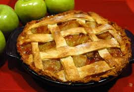

Welcome New and Returning Students!
We hope you all have enjoyed your summer and are ready to begin the fall semester! The September news letter is intended to provide you with information from the ISSI, and help you arrange your time to explore the campus and city. Please reference our website, Facebook, and Twitter for the most updated information about our colorful and interesting activities and events during this month.
ISSI News
Northeastern Women's Soccer vs. Boston College
Wednesday, September 3, 2014 at 1.00pm
Cheer on your team, meet some new friends and become a member of Husky Nation! We'll see you there! #GoNU *FREE tickets through MyNEU, and FREE game day shuttle leaves every 15 minutes from Chiken Lou's starting one hour prior to kickoff.
Boston Walking Tour
Saturday, September 6, 2014 at 11.30am depart from the Ell Hall Lobby
Join the ISSI and our Student Leaders (ISL) on a walking tour of Boston! We will walk from Northeastern's campus to the North End for cannoli's! The group will depart promptly at 11:30am from the Ell Hall Lobby. Please wear appropriate clothes and shoes as we will be walking. *Registration will open on Friday, August 29 under "Life at NU" of the ISSI website.
ISSI Night at the Museum
Wednesday, September 10, 2014 from 5.30pm to 7pm, Museum of Fine Arts, depart from the Ell Hall Lobby

One of the finest collections of art in the world is housed just a short walk from campus at the Museum of Fine Arts (MFA). Please bring your Northeastern Husky Card. The group will depart promptly at 5:30pm from the Ell Hall Lobby. *Registration will open on Wednesday, September 3 under "Life at NU" of the ISSI website.
Cross Cultural Picnic - Strawberry Banke Museum
Saturday, September 20, 2014, 10:00am to 3:00pm
We invite you to enjoy a causal picnic lunch and informal intercultural dialogue at New Hampshire's Strawberry Banke Museum. Students will be able to visit the Museum and see historical relics of New England. A boxed picnic lunch and transportation will be provided. For more information about the museum, please check its website here. *Registration will be open on Friday, September 12 under "Life at NU" of the ISSI website.
Apple Pie Baking Demonstration
Friday, September 26, 2014, from 5:30pm to 7:00pm, ISSI Lounge, 405 Ell Hall

Come learn how to cook an apple pie and take home a recipe to try on your own! *Registration will be open on Friday, September 19 under "Life at NU" of the ISSI website.
Apple Picking
Saturday, September 27, 2014, from 10:00am to 4:00pm
Participate in the quintessential New England activity and bring home your own bucket of delicious apples! *Registration will be open on Friday, September 19 under "Life at NU" of the ISSI website.
ISSI Post-Completion Optional Practical Training (OPT) Seminars
For the students who are holding an F-1 visa, the International Student and Scholar Institute (ISSI) at Northeastern University offers Optional Practical Training Seminars to assist those students who are applying for OPT work authorization. They will be held for two hours. All students must arrive on time for these seminars. There will be time for a brief question and answer session at the end of each seminar.
News around NU
Student Employment Job Fair
Wednesday, September 3, 2014 from 11:00am to 1:00pm Indoor Quad, Curry Student Center
For students who are interested in looking for part time positions for work-study and non work-study positions on campus, the annual Part Time Student Job Fair will provide a good opportunity for you to meet with employers and make connections to pursue employment. For more information about this fair, please check the website here. (Note: If you are an international student with an F-1 or J-1 visa, be sure to come to the ISSI to get authorized to work before starting any type of employment.)
Liquid Nitrogen Ice Cream Social
Friday, September 5, 2014 from 2:00pm to 3:00pm, Krentzman Quad
The Department of Chemistry and Chemical Biology and the College of Science will make ice cream in front of your eyes using some simple science. For more information about this event, please check the event's website.
Salsa Night
Friday, September 5, 2014 from 8:30pm to 11:00pm, Dance Studio A, Curry Student Center
For students who are interested in Salsa, the NU Ballroom Dance Club will offer you a free Salsa lesson in the beginning followed by open dancing. This will be a Party, so no partner or prior experience is required. For detailed information about this event, please check here.
Fall Volunteer Fair
Friday, September 12, 2014 from 11:00am to 3:00pm, Centeenial Common
Organized by the Center of Community Service, around 75 local nonprofit organizations will come to the annual Fall Volunteer Fair on Centennial Common so that students and staff can learn more about what they do, and what volunteer and intership positions are available. Rain date: Monday, September 15, 2014. For more information, please click here.
Study Abroad Fair
Tuesday, September 16, 2014 from 11:00am to 1:00pm, Indoor Quad, Curry Student Center
Hosted by the Global Experience Office (GEO), the Study Abroad Fair will provide the opportunites for students who are interested studying abroad to meet with program partners from around the world and GEO staff, and view all the numerous international opportunities available to you as a Northeastern student. For more detailed information, please check here.
The Socio-Sonic Circuitry of Afro-Latino Music in the Caribbean
Monday, September 29, 2014, at 1:30pm, Blackman Auditorum
Sponsored by Northeastern Center for the Arts, come and enjoy an afternoon with Raquel Z. Rivera, Ph.D. from Bomba, Son Jarocho and Palos to Hip Hop. Drawing from her work as a scholar and performer of Afro-Caribbean music, Raquel Z. Rivera explores the histories and contemporary contexts of various Afro-Latino music genres. This lecture is in collaboration with Dr. Emmertt Price's African American Music class and Latino/a Heritage Month. For more detailed information about this lecture, please click here.